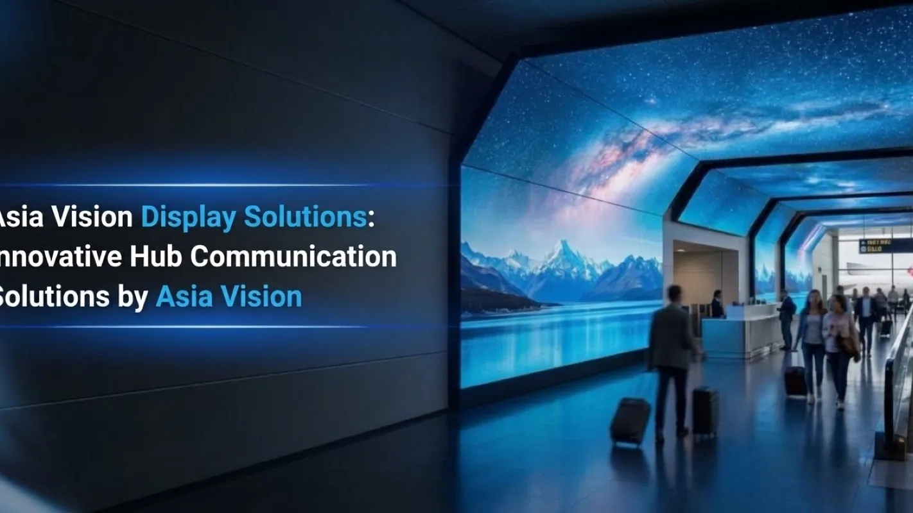
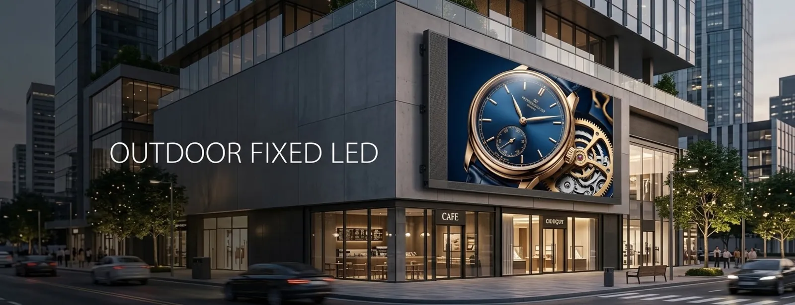
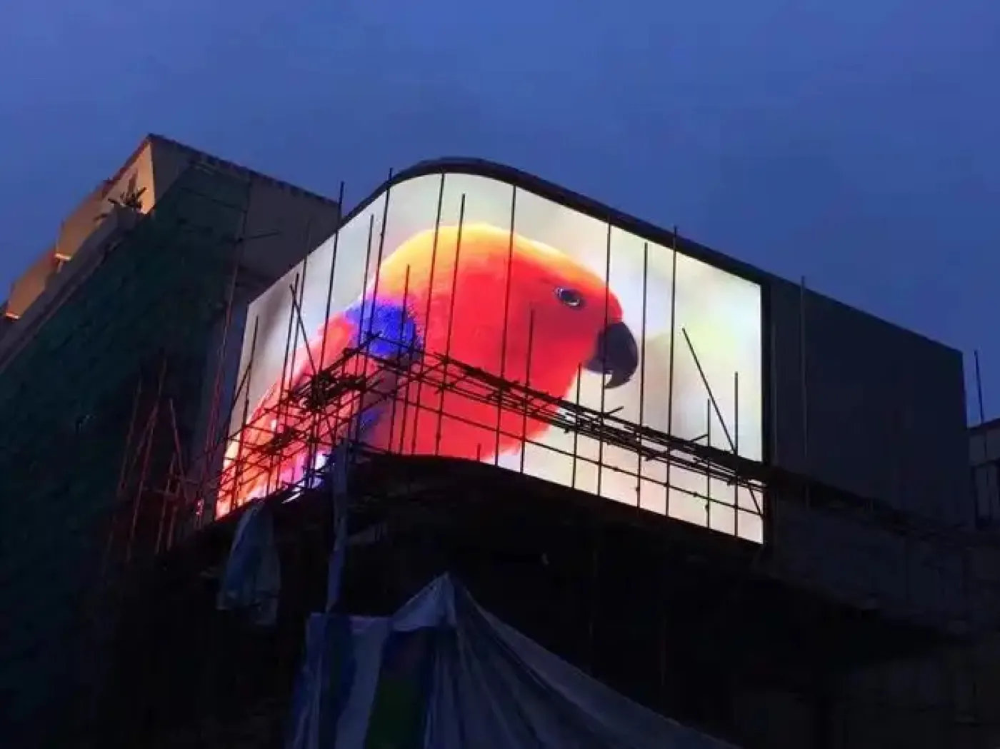

How do you buy an outdoor digital billboard without mixing up screen price with the real project cost? A digital billboard is an advertising asset first and a display product second: pitch, brightness, uptime and proof of play all feed the rate the site can command, while structure, power and permits often rival the screen line. This is a buying guide for the digital board itself, not a comparison of LED versus printed posters — that sits in LED vs Traditional Billboard.
Outdoor conditions then impose their own requirements. A billboard faces direct sun, rain, wind loading, and continuous duty across a very long service life. This guide explains why the DOOH market keeps expanding, how cost is structured across a billboard programme, and how to compare suppliers on published specifications rather than unsourced brochure numbers. A roadside billboard is a fixed, high-brightness installation; a touring or rental stage wall is a different product, with a different cabinet system — see the stage LED rental guide if that is the job.
Digital out-of-home has grown because it fixes the fundamental limitation of a printed billboard. A static site sells one advertiser at a time and changes only when a crew visits the site. A digital site sells multiple advertisers per hour, changes creative in seconds, and can schedule messages to a time of day when the audience is most relevant.
That flexibility changes the revenue model. A digital site can sell premium dayparts, run a sponsor takeover for a single evening, and fill unsold inventory with house or programmatic content. The same physical structure generates several revenue streams that a printed board cannot offer, which is why operators convert existing sites even when the paper board still works.
Measurement has improved in parallel. Sensors and playback logs give advertisers evidence that a campaign ran as booked, in the right slot, on the right screen. That accountability is what allows a digital site to command a rate premium, because the media buyer can justify the spend with data rather than with an estimate of passing traffic.
Content costs have also fallen. High-brightness creative is no longer produced only by specialist studios, and template-driven design lets an operator turn a campaign around in a day. The practical result is that a digital billboard can respond to a local event or a weather change within hours, which is a capability a printed board simply does not have.
Reliability is the constraint that keeps the market credible. An advertising asset that goes dark during a booked campaign creates a make-good obligation and damages the operator's reputation with agencies. Uptime is therefore not an engineering detail but a commercial guarantee, and it drives both the hardware specification and the service contract behind it.
Regulation shapes the market as much as technology does. Many jurisdictions limit brightness at night, restrict motion in certain zones, or require minimum dwell times between creative changes. A modern control system handles those rules automatically through scheduled brightness profiles and playback constraints, which is a practical requirement rather than a nice-to-have for any operator running sites across several municipalities.
Programmatic buying has widened the advertiser base. Automated platforms let smaller advertisers book a slot without negotiating a long-term contract, which fills inventory that would otherwise run house content. That development rewards operators whose screens and control systems report playback data reliably, because programmatic demand depends on trustworthy delivery evidence.
Figure 1 shows an outdoor LED screen.

The cost of a digital billboard is best understood as a stack of categories rather than a single price. Screen cost is often the largest single line, but it is rarely the majority of the total. Structure, foundations, permitting, power supply works, control and connectivity, and content production all add to the project, and several of them are site-specific.
Pixel pitch is the variable that changes the screen line the most. A finer pitch costs more per square metre and also increases the power and processing requirement, while a coarser pitch suits a large site viewed from distance and costs less. The correct choice is set by the nearest realistic viewing distance, not by the largest size the site could support.
Structure and power usually surprise first-time buyers. A billboard frame has to carry the screen weight plus wind load, and a site far from an adequate electrical supply may need a service upgrade before the screen is ever installed. Those works are frequently quoted separately and can rival the screen cost on a difficult site.
The table below sets out the main cost categories and the site factors that drive each one. Values are expressed as relative tiers because absolute cost depends on site conditions and should be quoted per project.
Lifetime cost deserves the same attention as the purchase price. A billboard is a revenue asset that must stay lit, so the cost of keeping it running over ten years is a material part of the investment case. Front service access, spare parts held on site, and a supplier who ships replacements quickly all reduce that recurring figure, and they are easier to secure at the point of purchase than to negotiate afterwards.
| Cost Category | Relative Impact | Main Driver | Notes |
|---|---|---|---|
| LED screen and cabinets | Highest | Screen area and pixel pitch | Finer pitch raises both cost and power draw |
| Steel structure and foundation | High | Wind load and site geology | Often quoted separately from the screen |
| Permitting and approvals | Variable | Local zoning and light regulations | Timeline risk as much as cost risk |
| Electrical supply works | Medium to high | Distance to an adequate supply | Service upgrades can rival screen cost |
| Control and connectivity | Medium | Network type and redundancy | Redundant links protect advertising uptime |
| Content production | Recurring | Number of advertisers and refresh rate | Template workflows reduce ongoing cost |
| Maintenance and spares | Recurring | Fleet size and site access | Front service access lowers lifetime cost |
Billboard suppliers are often compared on price alone, which is the least useful comparison. Two cabinets with a similar price can differ significantly in brightness, sealing, refresh rate, and warranty, and those differences show up in uptime and in advertising rate rather than in the purchase invoice.
Brightness determines whether the screen can hold an advertising image against direct daylight. The required level depends on the site (full sun on the face versus a more sheltered aspect) and should be confirmed for the pitch being quoted. The D-PRO outdoor series publishes brightness up to 10,000 cd/m². The COB EH-PRO series publishes 3,500 cd/m² with IP65, and COB ZH publishes 4,000 cd/m², which suits closer-view outdoor positions rather than a long-distance roadside board.
Weather protection determines the maintenance burden. Buyers commonly specify a high IP rating, front and rear, for a permanent outdoor billboard because the screen faces rain and wind-driven water. That rating must be confirmed on the quotation for the exact cabinet: the D-PRO product page does not publish an IP figure, while COB EH-PRO publishes IP65. Do not assume an unsourced IP65 rating transfers from one series to another.
Refresh rate and warranty complete the comparison. If advertisers or news crews will film the site, ask for a camera-safe refresh figure on the quotation — the D-PRO product page does not publish a refresh rate. Asia Vision's site-wide warranty is three years. D-PRO is published as a front-maintenance, die-cast module (P5 / P5.7 / P6.67 / P8 / P10). The table below records what is published for D-PRO and what still has to be confirmed, rather than inventing competitor figures.
Cabinet weight is an underrated comparison point. A lighter cabinet reduces the load on the steel structure, which can lower the structural cost as well as the freight bill. D-PRO does not publish a cabinet weight on the current product page, so ask for weight per cabinet and per square metre on the quotation and pass those figures to the structural engineer. See the structural load guide and the billboard structural guide.
| Feature | Published on the D-PRO product page | Confirm on the quotation |
|---|---|---|
| Pixel pitch | P5 / P5.7 / P6.67 / P8 / P10 | The pitch that matches the nearest viewing distance |
| Brightness | Up to 10,000 cd/m² | The figure for the chosen pitch and the site's sun exposure |
| Module / cabinet | 480×320 mm die-cast aluminium module; front maintenance | Cabinet size, weight and whether rear access is also required |
| Supply | DC 3.2/4.2 V; max current 9A+13A | Per-cabinet load, feed size and surge protection |
| IP rating | Not published on the product page | The front and rear IP rating for a permanent outdoor site |
| Refresh rate | Not published on the product page | A camera-safe figure if the site will be filmed |
| Warranty | Site-wide three years (confirm cover on the quotation) | What the warranty includes and the spare-parts period after it |
| Certification | Not listed on the D-PRO page (the site lists ISO 9001, CE, FCC and RoHS as company certifications) | The exact marks and files that apply to the model being shipped |
Figure 2 shows an outdoor LED screen.

The questions below cover the decisions billboard operators face most often, from pitch and brightness to uptime planning and conversion of an existing printed site.
For a roadside or facade billboard, start with the D-PRO outdoor series (P5–P10, front maintenance, brightness up to 10,000 cd/m²). For closer-view outdoor positions, see COB EH-PRO (IP65, 3,500 cd/m²) and COB ZH (4,000 cd/m²; wind resistance published up to 20 m/s). The COB EF series publishes 3,000 cd/m²; it does not publish an IP rating on the current product page, so confirm sealing on the quotation. Request a billboard quotation with pitch, brightness and load data for your site.
Get pricing, specifications, and installation proposal for your outdoor LED billboard.
Request Billboard Quote WhatsApp